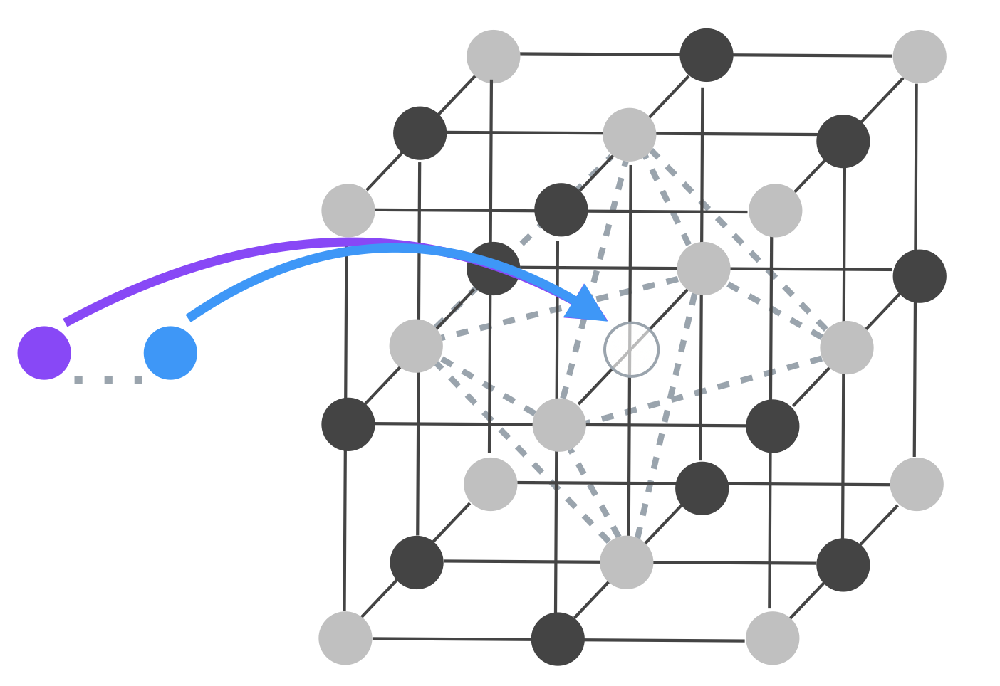
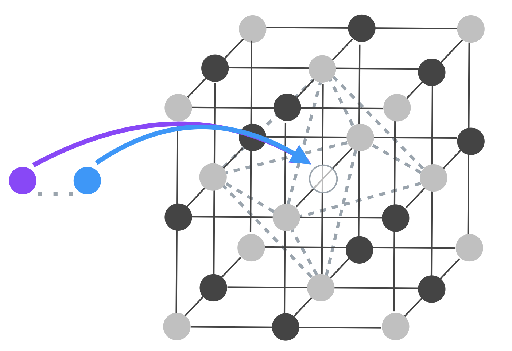

Optical Research Collective
Optical Research Collective
Research
Quantum System Identification Historically, systems useful for quantum information processing have been discovered serendipitously. This has lead to the intense study of a handful of potential quantum systems and does not distinguish between optimal systems for quantum sensing and those for quantum networking. We seek to upend in this approach and instead perform systematic discoveries of quantum systems suitable for tailored processes.

